フィードを購読
企業のテックブログの更新をまとめた
RSSフィードを配信しています
初回掲載順に通知し、元記事の公開日時を本文に表示します
企業のテックブログの更新をまとめた
RSSフィードを配信しています
初回掲載順に通知し、元記事の公開日時を本文に表示します
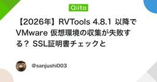
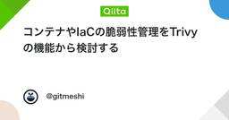

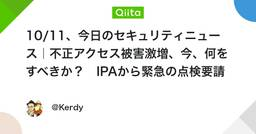


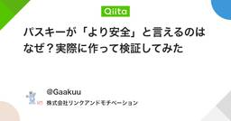


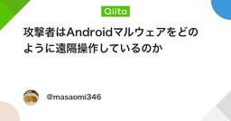


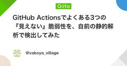

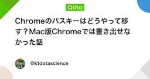
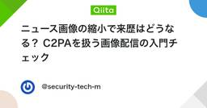
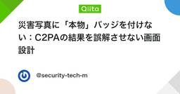
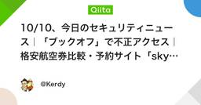
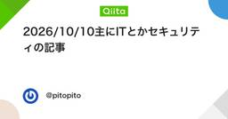

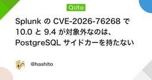
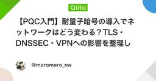

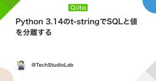
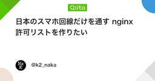
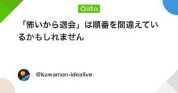
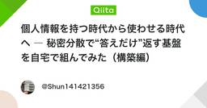


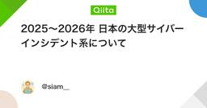

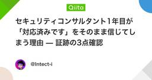

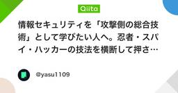
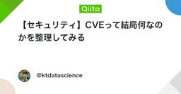
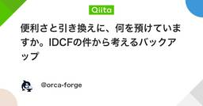
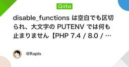

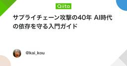
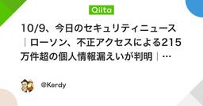

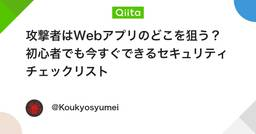
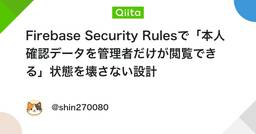

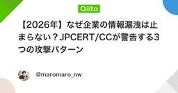
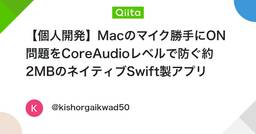
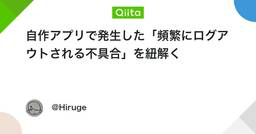


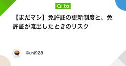
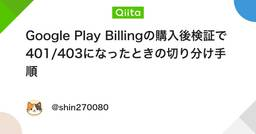

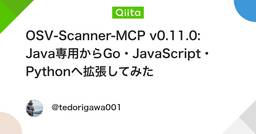
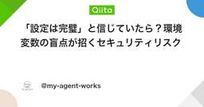
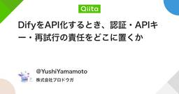
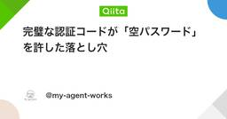
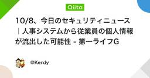
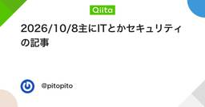

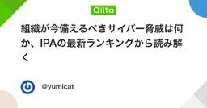
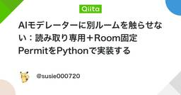
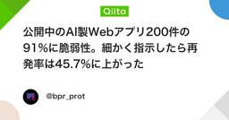
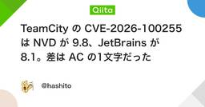

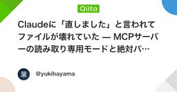

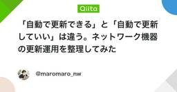
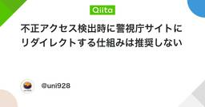
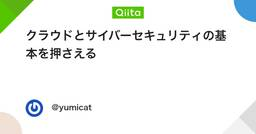
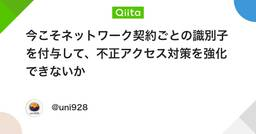
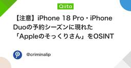
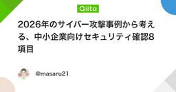

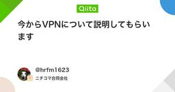